Design
Springfest Poster Series
Combining images, typography, and composition to tell a story.
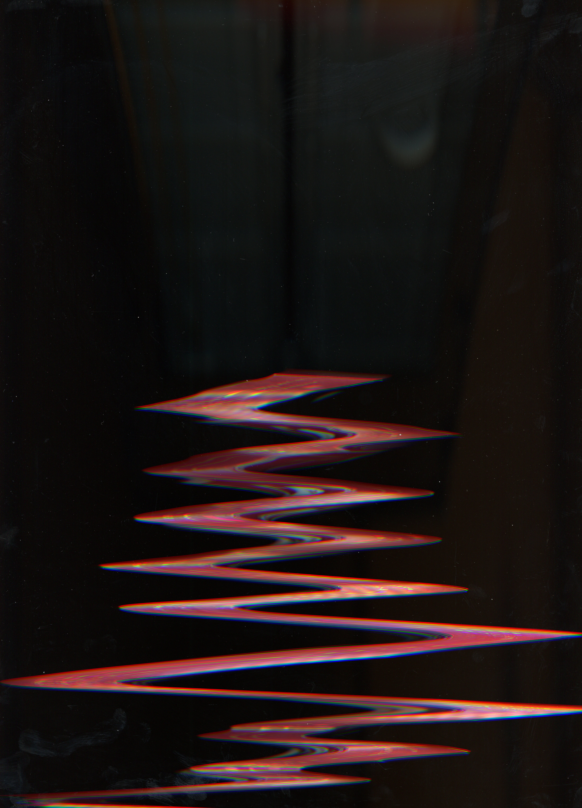
The Story
Springfest is MIT's spring concert. A club called Student Events Board (SEB) finds and artist and puts the entire concert together. As part of my graphic design class, I had to create a poster series for an event happening on campus. These posters had to be created using trash. As part of my process, I took scans of the trash, but I moved it around to produce some interesting abstract graphics.
The Process
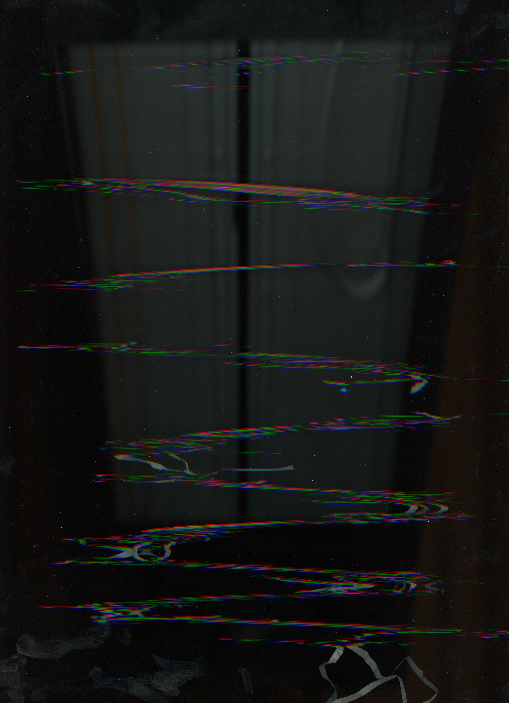
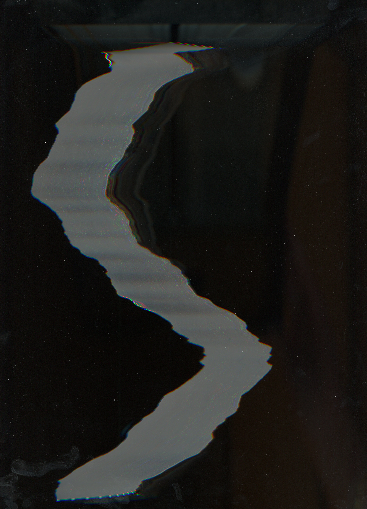
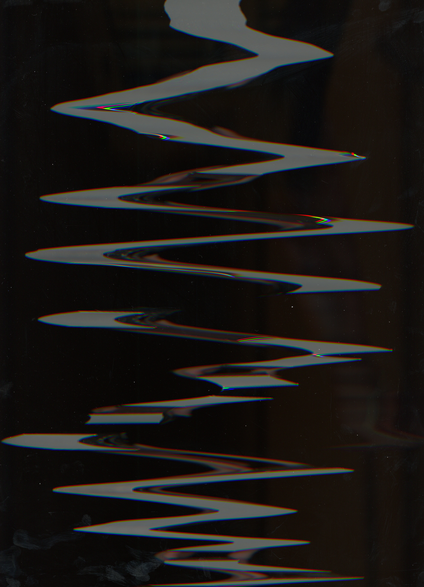
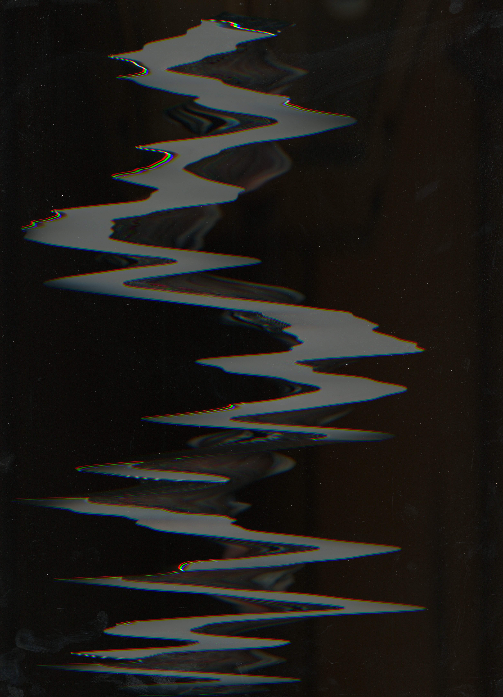
Photoshop Color Editing
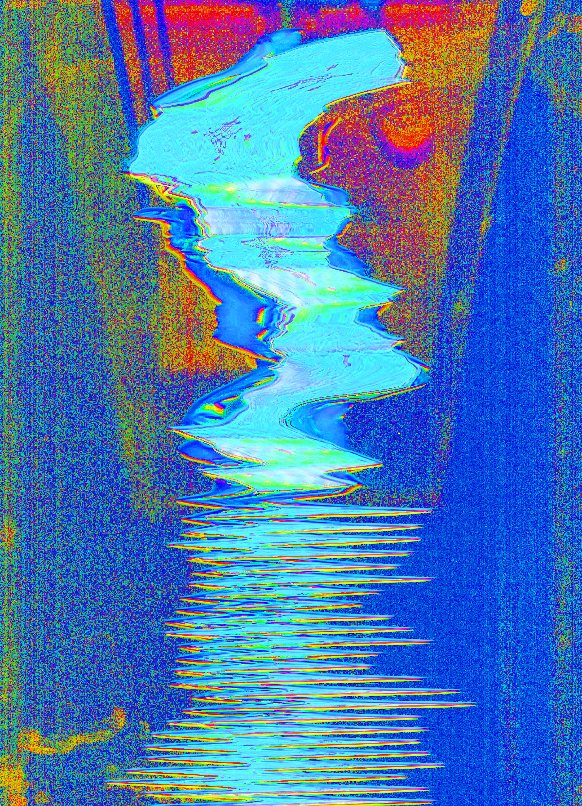
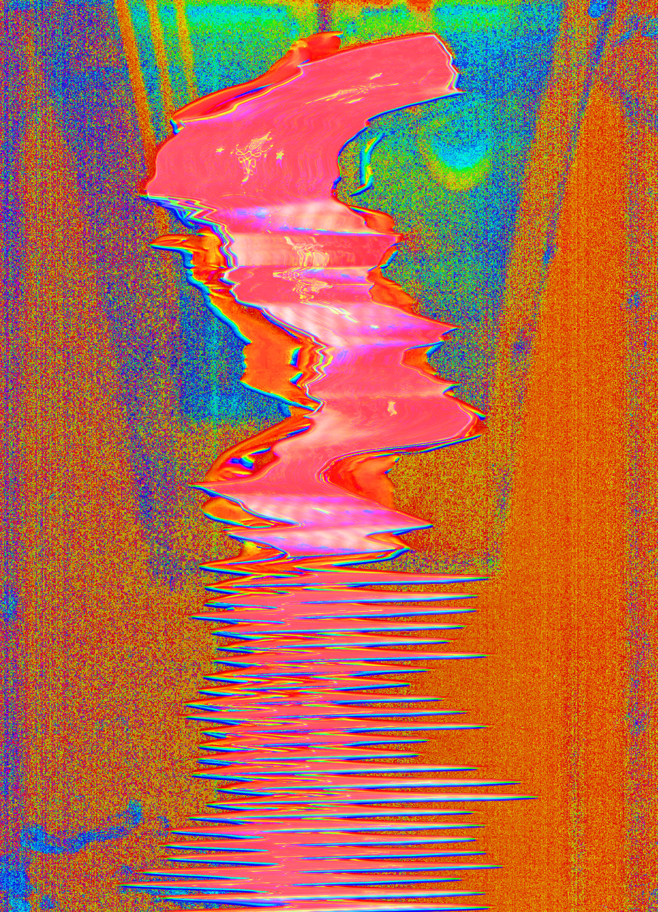
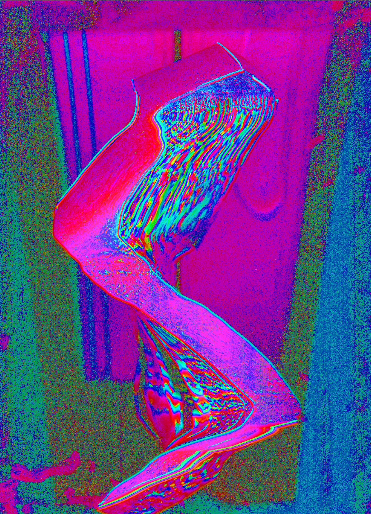
Final Product
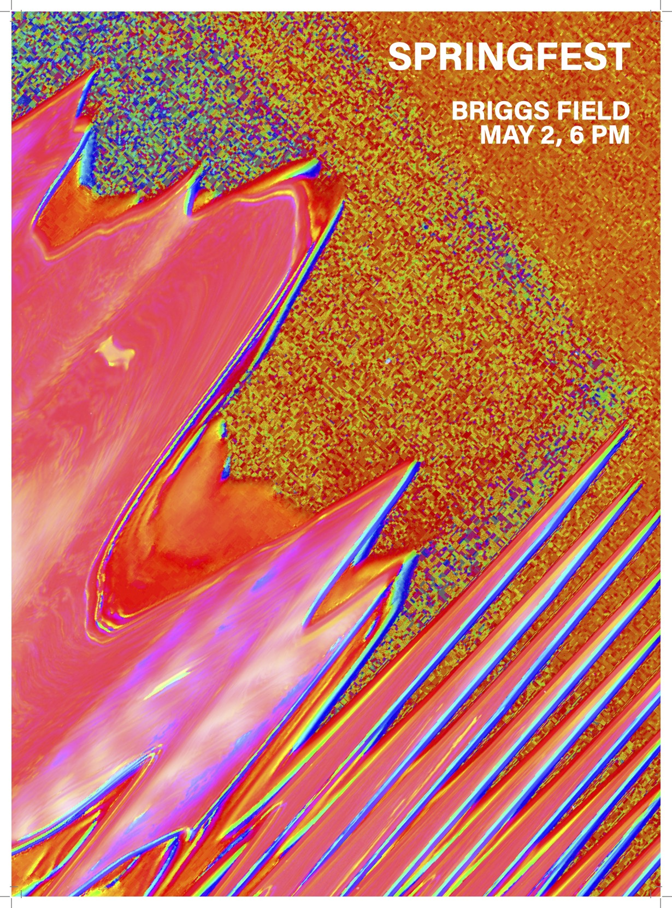
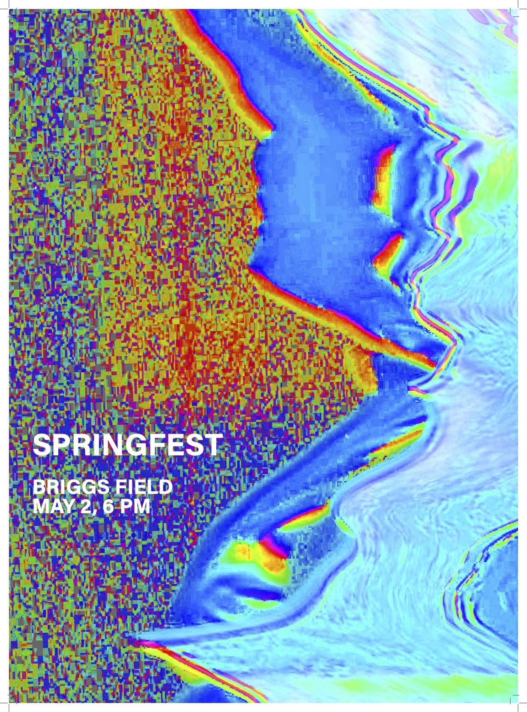
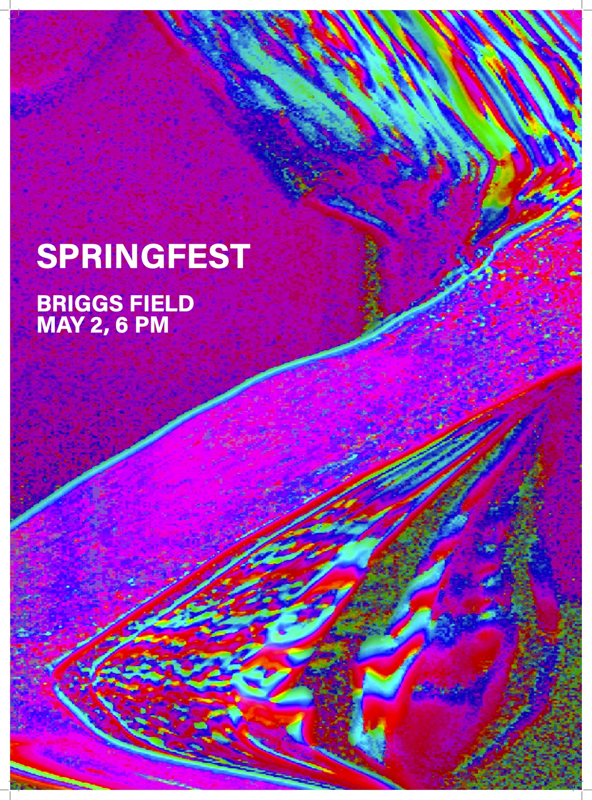